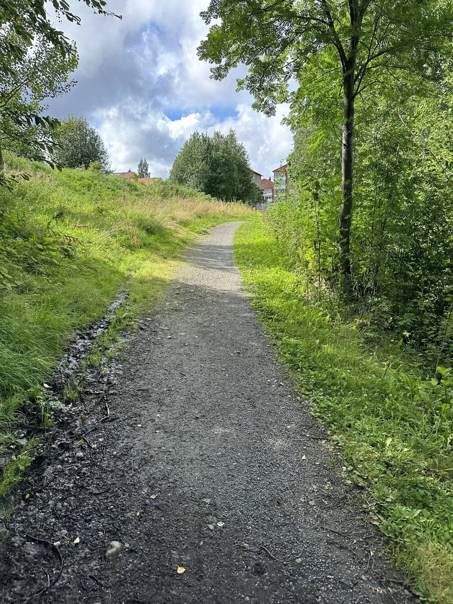
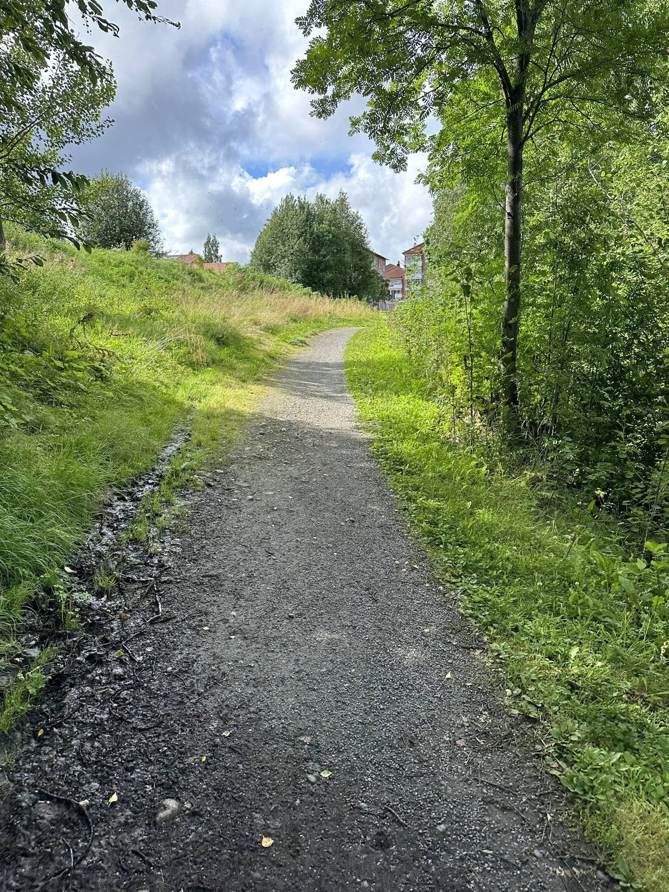

Vandringsleder och Cykelleder i Skellefteå

 

Prova den här 16,7-km slingleden i närheten av Skellefteå, Västerbotten. Den anses generellt vara en medelsvår led och tar i genomsnitt 3 t 37 min att gå. Det här är en populär led för vandring, men du kan ändå njuta av lite ensamhet under lugnare tider på dagen. Den bästa tiden att besöka leden är mars till oktober.
Rast- och Grillplatser
Här finns flera välutrustade rastplatser med grillar, bord och bänkar. Perfekt för en paus under din vandring eller cykeltur.